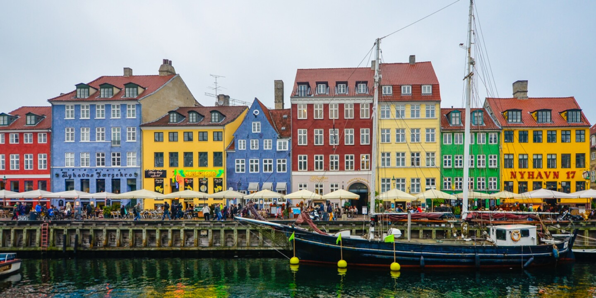
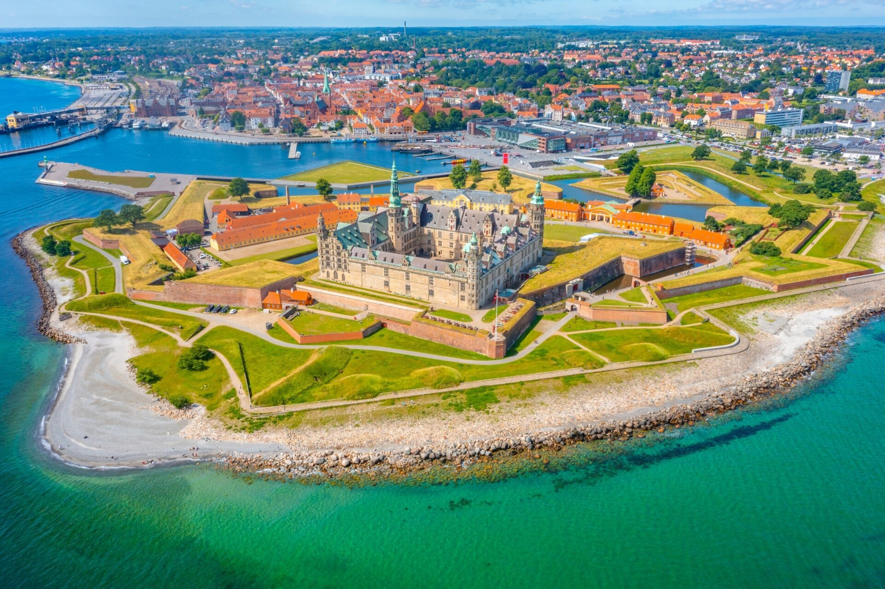
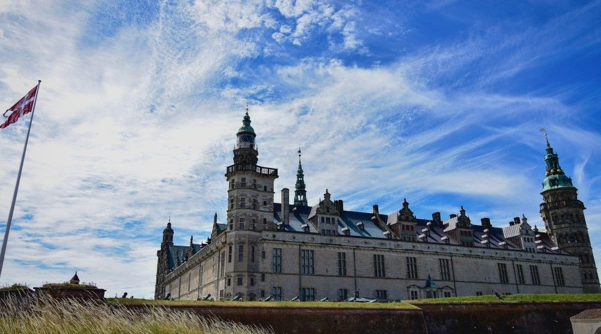
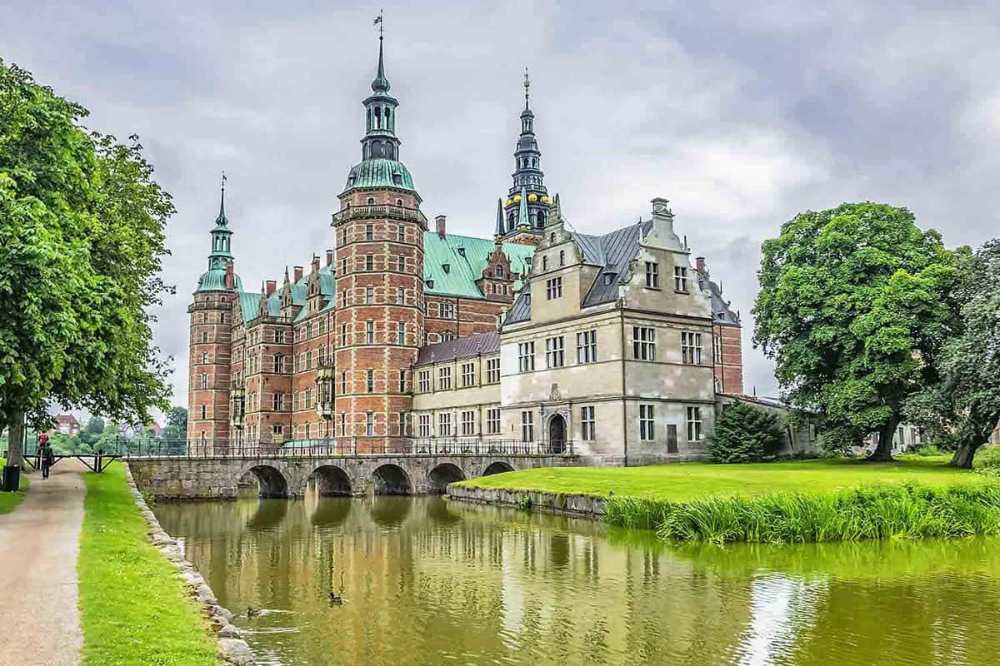
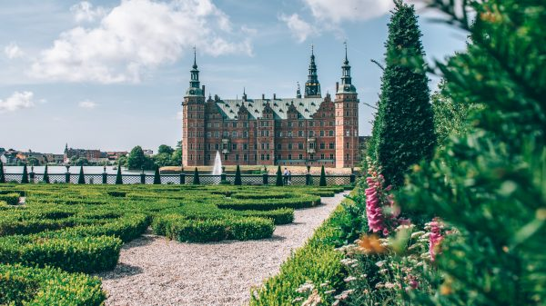
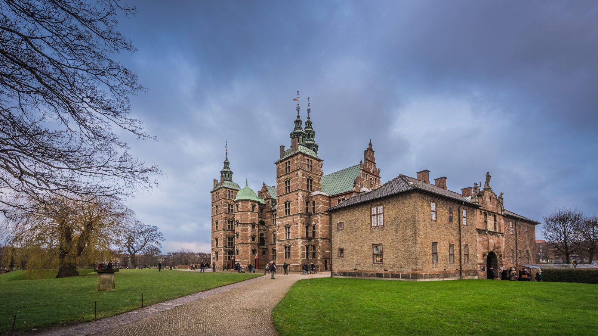
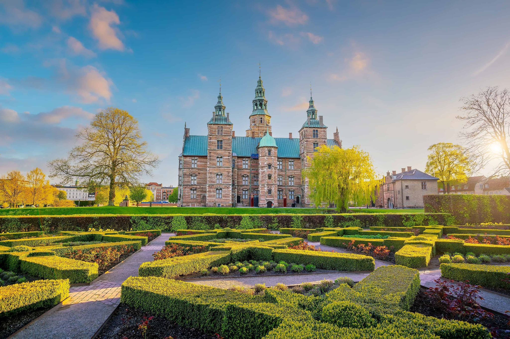
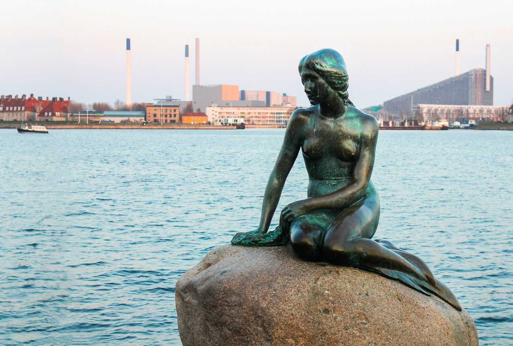
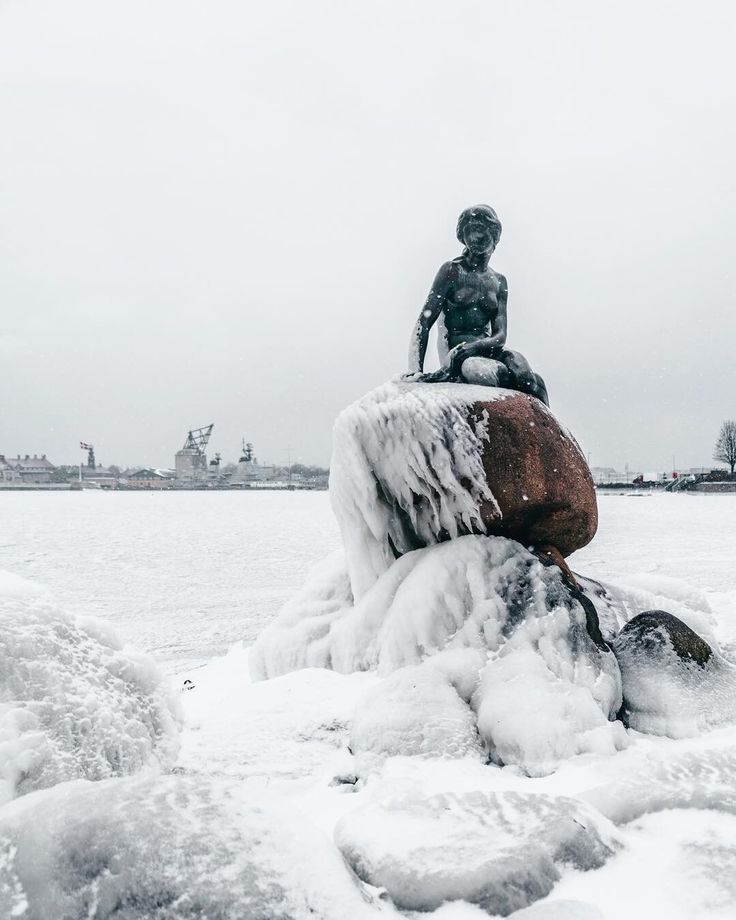

Nyhavn, Copenhagen


A postcard-perfect harbor where color, history, and life meet. Lined with vibrant 17th-century townhouses and gently swaying wooden
ships, Nyhavn feels like a living fairytale. Once a busy port for sailors and merchants, today it’s the heart of Copenhagen’s relaxed
spirit—filled with cozy cafés, laughter, and reflections dancing on the water. Stroll along the canal, soak in the atmosphere, and
watch the city slow down around you. Nyhavn isn’t just a place to see—it’s a feeling, capturing the warmth, charm, and soul of Denmark
in every step.
Best time to visit:
Spring (April–June) or early autumn (September–October). Go in the morning for fewer crowds and that classic postcard vibe.
Opening hours:
Open daily. Cafés and attractions usually 9:00–18:00 (varies by season).
Entry:
Free to explore. Boat tours and museums require a ticket.
SEE MAP
Kronborg Castle, Helsingør


Rising proudly above the narrow strait between Denmark and Sweden, Kronborg Castle feels like a legend carved in stone. Known worldwide
as Hamlet’s Castle, its grand towers, echoing halls, and sweeping sea views carry the drama of kings, sailors, and centuries past. As
waves crash below its walls, the castle stands as a symbol of power, art, and storytelling. Walk through its courtyards, explore hidden
passages, and let history unfold around you. Kronborg isn’t just a monument—it’s a place where myth and reality meet, making it an
unforgettable stop for every traveler.
Best time to visit:
Late spring to early autumn (May–September). Morning visits are best for fewer crowds and nicer light.
Opening hours:
Daily, usually 10:00–17:00 (longer in summer).
Entry:
Castle interiors require a ticket (around €20). Castle grounds are free to explore.
SEE MAP
Frederiksborg Castle, Hillerød


Set like a dream upon shimmering lake waters, Frederiksborg Castle is Denmark’s crown jewel of Renaissance beauty. Surrounded by
formal gardens and mirrored reflections, its red-brick towers and copper spires tell stories of royal ambition, art, and ceremony.
Inside, grand halls and detailed ceilings preserve centuries of Danish history, while outside, the peaceful gardens invite slow walks
and quiet awe. Elegant, romantic, and timeless, Frederiksborg Castle feels less like a visit and more like stepping into a living
fairytale—an essential stop for anyone seeking the soul of Denmark.
Best time to visit:
Spring to early autumn (May–September). Late morning or early afternoon is ideal for gardens and lake views.
Opening hours:
Daily, usually 10:00–17:00 (extended hours in summer).
Entry:
Castle interiors require a ticket (around €15–20). Gardens are free to visit.
SEE MAP
Rosenborg Castle, Copenhagen


Tucked within the lush embrace of King’s Garden, Rosenborg Castle feels like a quiet royal secret in the heart of the city. Its
elegant towers and warm red walls guard treasures of Denmark’s past, including the dazzling crown jewels and royal regalia. Inside,
candlelit rooms and ornate chambers whisper stories of kings, queens, and courtly life, while outside, locals relax among flowers and
tree-lined paths. Intimate yet majestic, Rosenborg is a place where history feels close, human, and beautifully alive—a must-see for
anyone wanting to experience Copenhagen’s royal charm up close.
Best time to visit:
Late spring to summer (May–August). Early morning is best to avoid crowds and enjoy the gardens.
Opening hours:
Daily, usually 10:00–17:00 (hours may vary by season).
Entry:
Castle access requires a ticket (around €18). The King’s Garden is free and open to the public.
SEE MAP
The Little Mermaid, Copenhagen


Sitting quietly on a rock by the sea, the Little Mermaid watches over Copenhagen with a soft, timeless grace. Inspired by Hans
Christian Andersen’s beloved fairy tale, this small yet powerful statue captures the poetic soul of Denmark—melancholy, dreamy,
and deeply connected to the sea. As waves gently lap at her feet and the harbor light shifts throughout the day, she feels almost
alive, lost in thought. Simple and understated, yet rich in meaning, the Little Mermaid is not just a landmark, but a moment of calm
and reflection—a must-see symbol of Danish storytelling and quiet beauty.
Best time to visit:
Spring to early autumn (April–September). Early morning or late afternoon is best to avoid crowds.
Opening hours:
Open 24/7, outdoors.
Entry:
Free to visit; just enjoy the waterfront and take photos.
SEE MAP
Tivoli Gardens, Copenhagen
The Louvre isn’t just a museum — it’s basically the world’s biggest flex when it comes to art and history. Once a royal palace, it now
holds over 35,000 pieces, from ancient Egyptian mummies to Renaissance masterpieces. It’s the home of icons like the Mona Lisa and the
Venus de Milo, but honestly, the whole place feels like a treasure hunt where every hallway hides something wild.
What makes the Louvre extra special is its vibe: that massive glass pyramid out front mixes old-school France with modern style and
inside you can jump from Greek statues to French crown jewels to Islamic art in just a few steps.
Best time to visit:
Spring to early autumn (April–September). Evening visits are magical with all the lights.
Opening hours:
Usually 11:00–23:00, varies by season.
Entry:
Ticket required for rides and gardens (approx. €18+), walking around is free in some areas.
SEE MAP